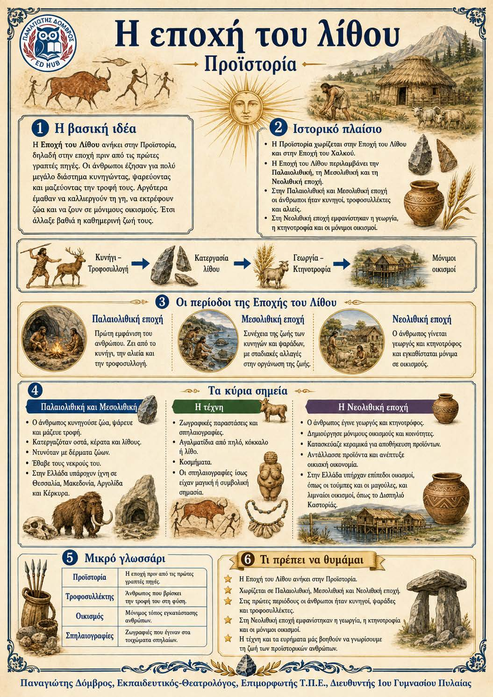

Πληροφοριογράφημα ενότητας
Το πληροφοριογράφημα αυτής της ενότητας δεν έχει ανέβει ακόμη. Οι σημειώσεις παραμένουν πλήρως διαθέσιμες.

Προϊστορία - Παλαιολιθική, Μεσολιθική και Νεολιθική εποχή
Η εποχή του λίθου ανήκει στην Προϊστορία, δηλαδή στην περίοδο πριν από τις πρώτες γραπτές πηγές. Στην Παλαιολιθική και τη Μεσολιθική εποχή ο άνθρωπος ζούσε κυρίως από το κυνήγι, το ψάρεμα και τη συλλογή τροφής. Στη Νεολιθική εποχή έγινε γεωργός και κτηνοτρόφος, εγκαταστάθηκε μόνιμα σε οικισμούς και κατασκεύασε περισσότερα αντικείμενα. Αυτές οι αλλαγές οργάνωσαν διαφορετικά την καθημερινή ζωή και την κοινότητα.
